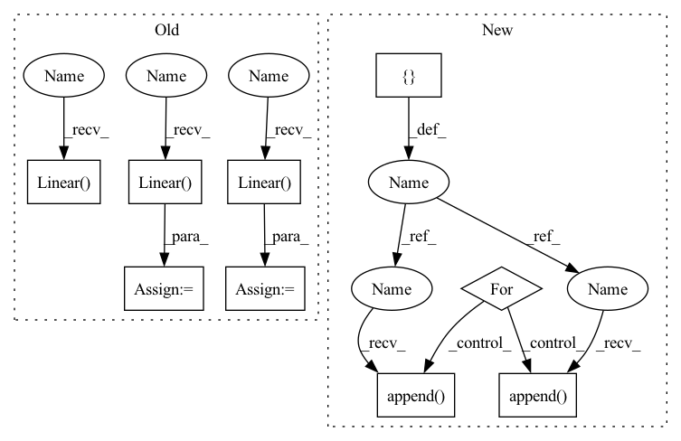

Pattern ID :635

Before Change
print(f"input dimentsions: {self.hidden_units}")
self.fc1 = nn.Linear(self.pose, self.hidden_units[0])
self.fc2 = nn.Linear(self.hidden_units[0], self.hidden_units[1])
self.fc3 = nn.Linear(self.hidden_units[1], self.hidden_units[2])
self.fc4 = nn.Linear(self.hidden_units[2], self.hidden_units[3])
self.fc5 = nn.Linear(self.hidden_units[3], self.hidden_units[4])
self.fc6 = nn.Linear(self.hidden_units[4], self.dof)
def forward(self, x):
After Change
)
print(f"input dimentsions: {self.hidden_units}")
layers = []
input_dim = self.pose
for output_dim in self.hidden_units:
layers.append(nn.Linear(input_dim, output_dim))
layers.append(nn.ReLU())
input_dim = output_dim
layers.append(nn.Linear(input_dim, self.dof))
self.layers = nn.Sequential(*layers)
In pattern: SUPERPATTERN
Frequency: 3
Non-data size: 9
Instances
Fragment ID: 1567703
Project Name: youtalk/iknet-open-manipulator-x
Commit Name: 492ac3f9080782b43c9961a321689afeed47805c
Time: 2021-05-03
Author: yutaka.kondo@youtalk.jp
File Name: iknet.py
Class Name: IKNet
Method Name: __init__
Parent Class: nn.Module
Fragment ID: 1567702
Project Name: youtalk/iknet-open-manipulator-x
Commit Name: 492ac3f9080782b43c9961a321689afeed47805c
Time: 2021-05-03
Author: yutaka.kondo@youtalk.jp
File Name: iknet.py
Class Name: IKNet
Method Name: __init__
Parent Class: nn.Module
Fragment ID: 1567701
Project Name: antofuller/configaformers
Commit Name: f2fa8c59ce1537b400a3288f9c556e84ca993807
Time: 2021-09-04
Author: afuller187187@gmail.com
File Name: building_blocks.py
Class Name: FeedForward
Method Name: __init__
Parent Class: nn.Module